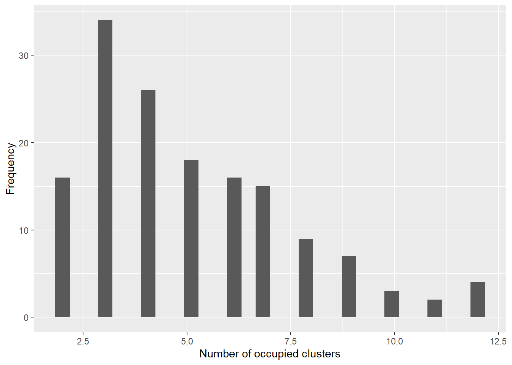

Advanced user vignette. CRP-only prototype for a Dirichlet process mixture in which the cluster atom is a scalar kernel parameter and the observation model uses the exported GPD-spliced kernel distributions.
Keywords
advanced, CRP, DPM, GPD, nimble
WarningAdvanced users only
This vignette is a code-oriented prototype. It assumes familiarity with NIMBLE model code and with validating custom Bayesian nonparametric models.
1 Objective
The package currently provides bulk-only mixtures (d*Mix) and bulk-tail spliced distributions (d*Gpd, d*MixGpd) as NIMBLE nimbleFunctions. However, it does not yet expose a “scalar-atom DPM with an embedded GPD tail” as a one-line high-level interface.
For the formal bulk-vs-tail splicing definitions (threshold exceedances, GPD tail quantiles, and spliced CDF/density), see Theory: GPD tails + DPM bulk + splicing.
The goal here is to show how to write that model directly in nimbleCode{} for the CRP backend, while reusing the exported spliced distributions (e.g., dGammaGpd, dLognormalGpd, dInvGaussGpd, dNormGpd, etc.). No ones/zeros trick is required because the likelihood is written using these distributions directly.
2 Model specification
Let (y_1,,y_N) be observations. Under a CRP DPM:
Latent cluster labels follow a Chinese restaurant process: [ z[1{:}N] (), ] implemented in NIMBLE as z[1:N] ~ dCRP(conc = alpha, size = N).
Each cluster (k) has a scalar atom (_k). The atom is the only cluster-specific kernel parameter; all other kernel parameters are fixed or global.
Conditional on the latent cluster label, the observation likelihood uses a GPD-spliced kernel distribution exported by the package. For a positive-support outcome, a convenient choice is Gamma+GPD: [ y_i z_i=k (=a, =k, u, {}, ), ] where the Gamma is used below the threshold (u), and exceedances use the GPD tail via dGpd inside dGammaGpd.
This construction is “GPD-in-DPM” in the sense that the tail is part of the per-observation distribution (not a separate post-processing step), while the mixture is induced by the CRP cluster labels.
3 A concrete working template (Gamma bulk, scalar scale atom)
The template below uses:
scalar atom: scale_k = theta[k] > 0
fixed bulk shape: shape0 (constant)
tail parameters: threshold, tail_scale, tail_shape (constants or global parameters)
You can substitute a different exported spliced distribution by changing the likelihood line (for example, dLognormalGpd, dInvGaussGpd, dNormGpd, etc.).
Code
library(CausalMixGPD)library(nimble)# Data shipped with the package (positive-support, tail-designed)data("nc_pos_tail200_k4")y <- nc_pos_tail200_k4$yN <-length(y)# Use the dataset's generating tail settings (keeps the example coherent)threshold <- nc_pos_tail200_k4$truth$thresholdtail_scale <- nc_pos_tail200_k4$truth$tail_params$scaletail_shape <- nc_pos_tail200_k4$truth$tail_params$shape# Choose a truncation level for the finite representation of clusterscomponents <-25# Fixed bulk shape (example)shape0 <-2.0code <-nimbleCode({# Concentration alpha ~dgamma(1, 1)# Scalar atoms (cluster-specific). Here: positive scale parameters.for (k in1:components) { theta[k] ~dgamma(a0, b0) }# CRP memberships (native NIMBLE BNP distribution) z[1:N] ~dCRP(conc = alpha, size = N)# Likelihood: exported spliced kernel distributionfor (i in1:N) { y[i] ~dGammaGpd(shape = shape0,scale = theta[z[i]],threshold = threshold,tail_scale = tail_scale,tail_shape = tail_shape) }})constants <-list(N = N, components = components,a0 =2, b0 =2,shape0 = shape0,threshold = threshold,tail_scale = tail_scale,tail_shape = tail_shape)data <-list(y = y)inits <-list(alpha =1,theta =rgamma(components, 2, 2),z =sample.int(5, N, replace =TRUE))m <-nimbleModel(code, constants = constants, data = data, inits = inits, check =TRUE)cm <-compileNimble(m)conf <-configureMCMC(m, monitors =c("alpha", "theta", "z"))
This section sketches a minimal posterior workflow after runMCMC() returns samps. The object returned by runMCMC() is typically a matrix with one row per retained iteration and one column per monitored node.
4.1 Basic parameter summaries
Code
# Posterior summary for alphaalpha_draws <- samps[, "alpha"]summary(alpha_draws)
Min. 1st Qu. Median Mean 3rd Qu. Max.
0.06258 0.43053 0.71488 0.85106 1.05312 4.22596
Code
# Posterior summaries for the scalar atoms theta[k]theta_cols <-grep("^theta\\[", colnames(samps), value =TRUE)theta_draws <- samps[, theta_cols, drop =FALSE]theta_summary <-t(apply(theta_draws, 2, function(x) {c(mean =mean(x), sd =sd(x),q025 =unname(quantile(x, 0.025)),q50 =unname(quantile(x, 0.50)),q975 =unname(quantile(x, 0.975)))}))kableExtra::kbl(theta_summary, digits =3, caption ="Posterior summaries of scalar atoms (theta[k])") |> kableExtra::kable_styling(full_width =FALSE)
Posterior summaries of scalar atoms (theta[k])
mean
sd
q025
q50
q975
theta[1]
0.991
0.622
0.333
0.806
2.593
theta[2]
1.180
0.796
0.339
0.951
2.846
theta[3]
1.379
0.467
0.812
1.208
2.356
theta[4]
1.038
0.540
0.182
0.956
2.265
theta[5]
1.025
0.483
0.394
0.862
2.446
theta[6]
1.157
0.725
0.249
0.992
2.869
theta[7]
1.216
0.575
0.291
1.085
2.447
theta[8]
1.790
1.069
0.197
2.496
2.794
theta[9]
0.584
0.770
0.300
0.341
3.512
theta[10]
0.713
0.121
0.664
0.707
0.922
theta[11]
0.882
0.297
0.611
0.793
1.683
theta[12]
1.744
0.659
0.744
2.324
2.324
theta[13]
0.870
0.546
0.287
1.086
2.096
theta[14]
0.700
0.121
0.383
0.637
0.827
theta[15]
0.964
0.277
0.725
0.725
1.261
theta[16]
1.109
0.000
1.109
1.109
1.109
theta[17]
0.131
0.000
0.131
0.131
0.131
theta[18]
1.090
0.000
1.090
1.090
1.090
theta[19]
0.954
0.000
0.954
0.954
0.954
theta[20]
0.536
0.000
0.536
0.536
0.536
theta[21]
1.013
0.000
1.013
1.013
1.013
theta[22]
0.981
0.000
0.981
0.981
0.981
theta[23]
2.387
0.000
2.387
2.387
2.387
theta[24]
1.289
0.000
1.289
1.289
1.289
theta[25]
0.820
0.000
0.820
0.820
0.820
4.2 Posterior clustering diagnostics
A practical summary of the induced partition is the posterior distribution of the number of occupied clusters, [ K^{(m)} = |{ z^{(m)}_1,,z^{(m)}_N }|, ] computed for each retained iteration (m).
Code
z_cols <-grep("^z\\[", colnames(samps), value =TRUE)z_draws <- samps[, z_cols, drop =FALSE]K_occ <-apply(z_draws, 1, function(zrow) length(unique(as.integer(zrow))))summary(K_occ)
Min. 1st Qu. Median Mean 3rd Qu. Max.
2.000 3.000 4.000 5.093 7.000 12.000
Code
dfK <-data.frame(K = K_occ)ggplot2::ggplot(dfK, ggplot2::aes(x = K)) + ggplot2::geom_histogram(bins =30) + ggplot2::labs(x ="Number of occupied clusters", y ="Frequency")

If you monitor z, this can be memory-heavy for large (N). For posterior diagnostics only, consider monitoring z for a subsample of observations, or derive K_occ inside NIMBLE using deterministic nodes (advanced).
4.3 Posterior predictive checks
A simple posterior predictive check is to generate replicated outcomes (y^{rep}) from the fitted model and compare distributional features.
For the CRP mixture, one convenient approximation is to sample a cluster label for a new observation using empirical cluster frequencies from the current iteration (ignoring the “new cluster” probability). This yields a practical in-sample predictive check and is typically sufficient for early debugging.
Code
# Extract theta and z at each iterationtheta_mat <- theta_drawsz_mat <- z_draws# One posterior predictive draw per iteration (increase B if needed)M <-nrow(samps)y_rep <-numeric(M)for (m in1:M) { z_m <-as.integer(z_mat[m, ])# empirical cluster weights tab <-table(z_m) labs <-as.integer(names(tab)) w <-as.numeric(tab) /sum(tab) k_new <-sample(labs, size =1, prob = w) scale_new <- theta_mat[m, sprintf("theta[%d]", k_new)] y_rep[m] <-rGammaGpd(1,shape = shape0,scale = scale_new,threshold = threshold,tail_scale = tail_scale,tail_shape = tail_shape )}# Compare observed vs replicated summariesquantile(y, probs =c(0.5, 0.9, 0.95, 0.99))
For more precise quantiles (and to reduce Monte Carlo error), increase the number of predictive draws per iteration or compute the predictive CDF as a mixture of p*Gpd terms and solve for the quantile (more expensive; recommended only after the baseline model is stable).
5 How to adapt this template
Select the appropriate spliced distribution for the support of your outcome:
Positive support: dGammaGpd, dLognormalGpd, dInvGaussGpd, dAmorosoGpd, etc.
Real line: dNormGpd or a suitable real-line kernel if available.
Identify a single kernel parameter to serve as the scalar atom (_k), and fix or globalize the remaining kernel parameters.
Decide whether threshold, tail_scale, and tail_shape are fixed constants, global parameters with priors, or covariate-linked (the last option is more involved and should be introduced only after the baseline model is stable).
6 Minimal validation requirements
Before applying the model to real data:
Perform simulation recovery under the same kernel and tail settings.